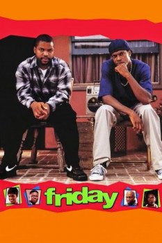

Friday (1995)


A lot can go down between Thursday and Saturday...

País:Estados Unidos, 91 minutos.
Idiomas:Inglés
GénerosComedia
Director/es:F. Gary Gray
Guionistas:Ice Cube, DJ Pooh
Códec de vídeo:Unknown
Número: 2999
TomatoMeter:

--

--
Clasificación IMDb:


7.2/10 (130.3K votos)
Certificación:
Argumento:
Craig and Smokey are two guys in Los Angeles hanging out on their porch on a Friday afternoon, smoking and drinking, looking for something to do.
Reparto
Ice Cube (Como Craig), Chris Tucker (Como Smokey), Nia Long (Como Debbie), Tommy Lister Jr. (Como Deebo), John Witherspoon (Como Mr. Jones)
Medio: Archivo de video,
Localización: D:\PELICULAS\ACTORES\Ice Cube\Todo en Un Viernes [1995] [683,51 Mb]\Todo en Un Viernes [1995].avi
Prestado: No
Rel. aspecto: Unknown